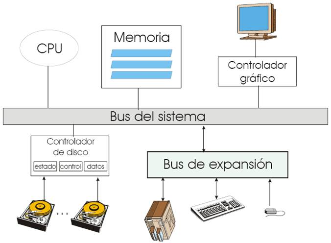
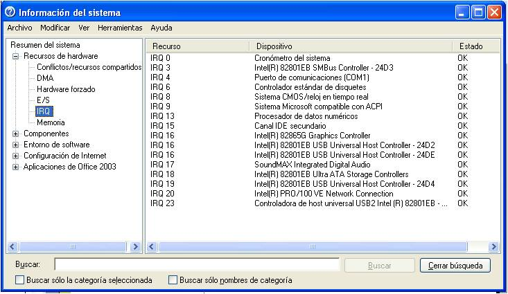
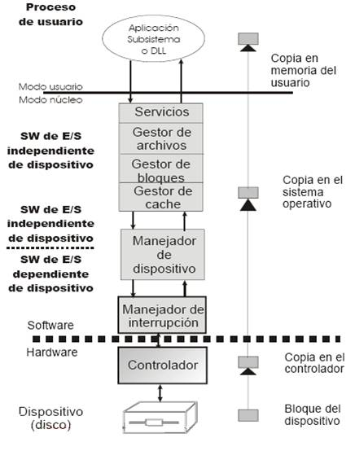
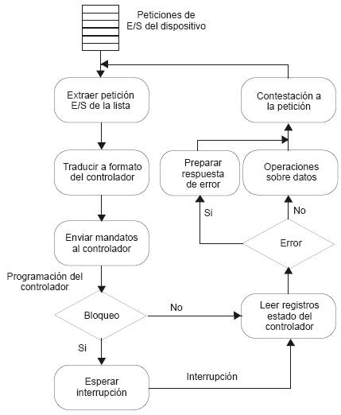

Conexión de dispositivos a una
computadora: 
Caracterizacion de los Dispositivos E/S.
- Conexión por puerto o memoria
- Para iniciar una operación de E/S, el CPU tiene que escribir sobre los registros (datos, control, estado) los datos de la operación a través de una dirección de E/S o de memoria asignada únicamente al controlador.
- El modelo de dispositivos por puerto es clásico de las arquitecturas Intel.
- Cuando se instala un dispositivo, a su controlador se le asigna un puerto de E/S, una interrupción de hardware y un vector de interrupción.
- En una operación de E/S el CPU la ejecuta operaciones del tipo portin o portout con la dirección del puerto del dispositivo y con parámetros para indicar que puerto se desea manipular.
- El problema de este tipo de direccionamiento es que exige conocer las direcciones de E/S y programar las instrucciones especiales de E/S, lo que es significativamente distinto del modelo de memoria.
- El modelo proyectado en memoria asigna a cada dispositivo de E/S un rango de direcciones de memoria a través de las cuales se escribe sobre los registros del controlador
- No hay instrucciones específicas de E/S, sino que las operaciones se llevan a cabo usando instrucciones máquina del manejo de memoria.
- Mapa único de direcciones de memoria
- Se reserva una zona de memoria física para asignar las direcciones de E/S.
Direcciones de E/S de algunos controladores en una PC con WinXP

Dispositivos de bloques y caracteres
Dispositivos de bloque:
- Acceso a nivel de bloque, el cual puede ser secuencial o aleatorio.
- Operaciones: leer, escribir, buscar, …, etc.
- E/S directa o a través del servidor de archivos.
- Ejemplo: discos y cintas.
Dispositivos de caracter:
- Acceso a nivel carácter, el cual también puede ser secuencial o aleatorio.
- Operaciones: get, put, …, etc.
- Existen bibliotecas para optimizar y dar forma a este tipo de accesos (edición de línea).
- Ejemplo: terminales, tarjetas de red, impresoras, módems, etc.
E/S programada
- La transferencia de información entre un periférico y el procesador se realiza mediante la ejecución de una instrucción de E/S.
- El procesador es el responsable de extraer o enviar datos entre la memoria y el controlador de dispositivo, lo cual implica que el proceso tiene que esperar mientras se realiza la transferencia. Se hace un muestreo periódico de los dispositivos para determinar su estado:
- Listo, ocupado, error
- Se hace un ciclo de espera activa para los dispositivos de E/S.
- Ventaja: no hay gasto de tiempo de gestión de interrupción.
- Desventaja: consume mucha CPU para dispositivos poco ocupados.
Aplicación:
- Hardware sin interrupciones
- Programas de control de canales de E/S
E/S por interrupciones
- El procesador envía la orden de E/S al controlador del dispositivo y no espera, se dedica a otras tareas hasta que le llega una interrupción del dispositivo que indica que se ha realizado la operación solicitada.
- El gestor de interrupciones recibe y maneja la interrupción
- Enmascarables para ignorar o retrasar interrupciones
- El vector de interrupción tiene las direcciones de memoria de los manejadores de interrupción.
- Se procesan según distintas políticas
- Prioridad, FIFO, etc.
- Algunas interrupciones no se pueden enmascarar (Ej. reset)
- Los mecanismos de interrupción también se utilizan para el manejo de excepciones (Ej. Instrucción Errónea).
Rutinas de tratamiento de interrupción
- Suelen tener dos partes:
- Una genérica y otra particular para el dispositivo
- La parte genérica hace:
- Capturar la interrupción
- Salvaguardar el estado del procesador
- Activar la rutina de manejo de interrupción
- Indicar al planificador que debe poner “lista” la rutina particular.
- Desactivar la interrupción
- Restaurar el estado del procesador
- Cesión de control
- La parte correspondiente a lo particular del dispositivo contiene el manejador que el fabricante desarrolló para manipular su dispositivo.
Interrupciones asociadas a algunos controladores en una PC:
Mecanismos de incremento de prestaciones
- Acceso directo a memoria (DMA)
- Se utiliza para evitar la E/S programada de grandes bloques de datos.
- Necesita un controlador con DMA
- Evita el uso del CPU transfiriendo los datos directamente entre los dispositivos de E/S y la memoria.
- Básico para aprovechar el CPU en un sistema multiprogramado, ya que libera tiempo del CPU que puede ser utilizado para ejecutar otros programas.
Arquitectura del Sistema E/S
Estructura y componentes
- Interfaz del SO para E/S
- Proporciona servicios de E/S síncrona y asíncrona a las aplicaciones y una interfaz homogénea ocultando los detalles de bajo nivel.
- Sistemas de archivos.
- Permite acceder a los manejadores de dispositivos de almacenamiento de forma transparente
- Gestor de redes
- Permite acceder a los manejadores de cada tipo en particular de forma transparente.
- Gestor de bloques
- Admite únicamente operaciones a nivel bloque
- Manejadores de dispositivo.
- Proporcionan operaciones de alto nivel sobre los dispositivos y las traducen a su código de control particular.
Estructuración del SW de E/S y flujo de una operación de E/S
Diagrama de flujo con las operaciones de
un manejador 